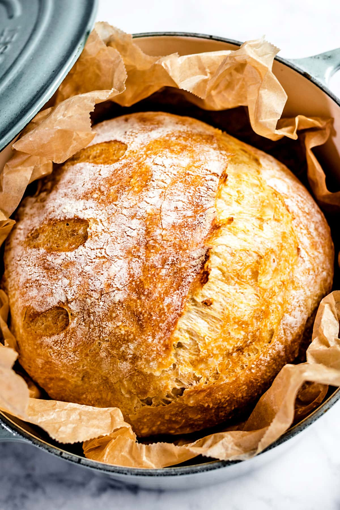

Bread is a staple food made from a simple combination of flour, water, yeast, and salt, yet it has been transformed into countless varieties across cultures and history. When mixed and kneaded, the dough develops structure, and as it rises, the yeast ferments the sugars, creating air pockets that give bread its light, airy texture. Baking then sets the structure and forms a golden crust, often rich in aroma and flavor. From soft sandwich loaves to crusty artisan breads, it can be enjoyed on its own or paired with a wide range of foods, making it one of the most versatile and widely consumed foods in the world.